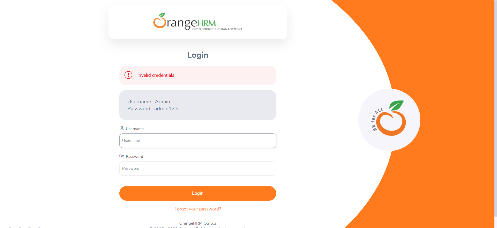

-
Test login functions
9:40:13 pm / 00:00:19:608 Fail
Test login functions
05.04.2023 9:40:13 pm 05.04.2023 9:40:33 pm 00:00:19:608 · #test-id=1FailValidate multiple login dataFailValidate multiple login dataGiven User is on OrangeHRM login pageWhen User enter AdminWrong and admin123WrongHooks.Hook.AddScreenshot(io.cucumber.java.Scenario)imageThen Validate login Invalid credentials in the login pageStep skippedFailValidate multiple login dataGiven User is on OrangeHRM login pageWhen User enter Admin and admin123Hooks.Hook.AddScreenshot(io.cucumber.java.Scenario)imageThen Validate login [blank] in the login pageStep skippedHooks.Hook.AfterScenario()PassValidate multiple login dataGiven User is on OrangeHRM login pageWhen User enter AdminWrong and admin123Then Validate login Invalid credentials in the login pageFailValidate multiple login dataGiven User is on OrangeHRM login pageWhen User enter Admin and admin123WrongHooks.Hook.AddScreenshot(io.cucumber.java.Scenario)image Then Validate login Invalid credentials in the login pageStep skipped
Then Validate login Invalid credentials in the login pageStep skipped
-
org.openqa.selenium.WebDriverException
1 tests
org.openqa.selenium.WebDriverException
1 failedStatus Timestamp TestName Fail 21:40:33 pm Hooks.Hook.AfterScenario() Test login functions.Validate multiple login data.Hooks.Hook.AfterScenario() -
org.openqa.selenium.StaleElementReferenceException
3 tests
org.openqa.selenium.StaleElementReferenceException
3 failedStatus Timestamp TestName Fail 21:40:27 pm When User enter Admin and admin123 Test login functions.Validate multiple login data.When User enter Admin and admin123Fail 21:40:28 pm When User enter Admin and admin123Wrong Test login functions.Validate multiple login data.When User enter Admin and admin123WrongFail 21:40:28 pm When User enter AdminWrong and admin123Wrong Test login functions.Validate multiple login data.When User enter AdminWrong and admin123Wrong
Started
May 4, 2023 09:40:12 pm
Ended
May 4, 2023 09:40:33 pm
Features Passed
0
Features Failed
1
Features
Scenarios
Steps
Timeline